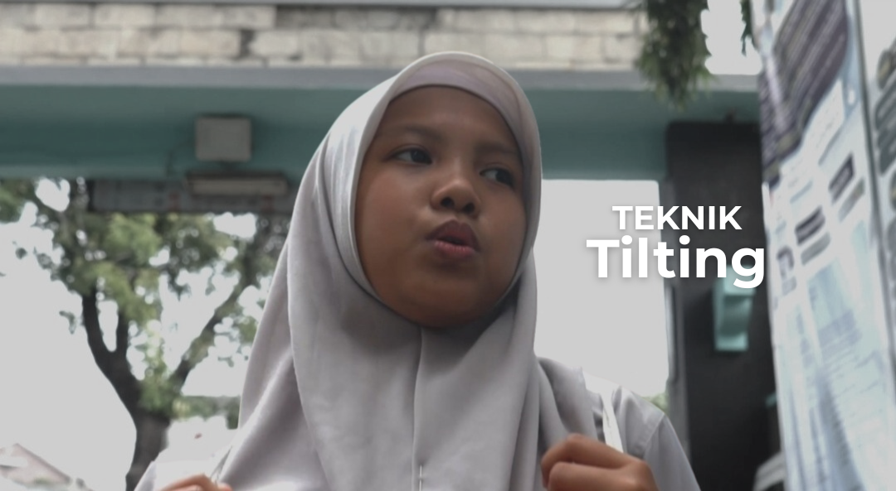
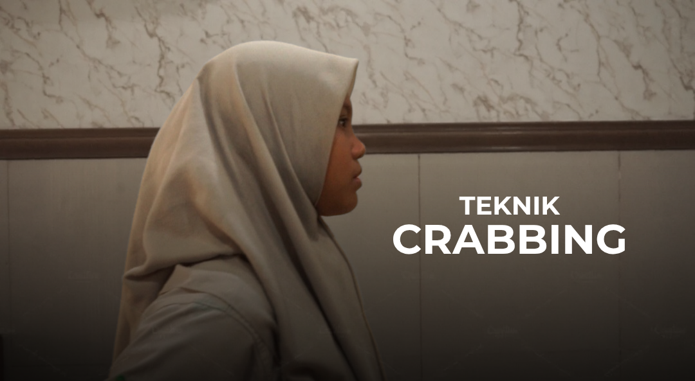
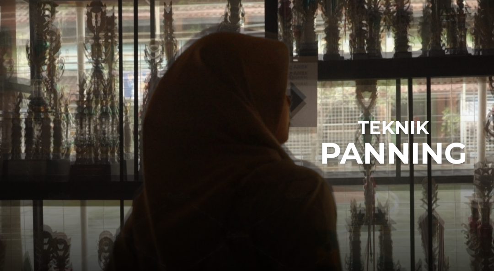
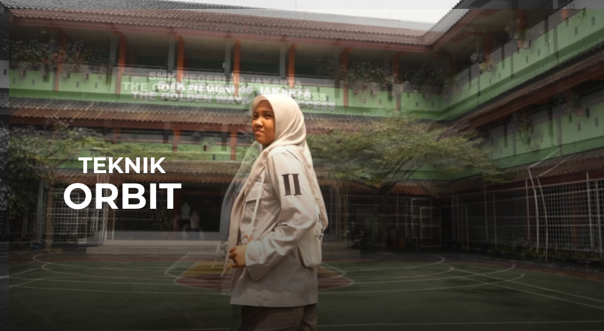
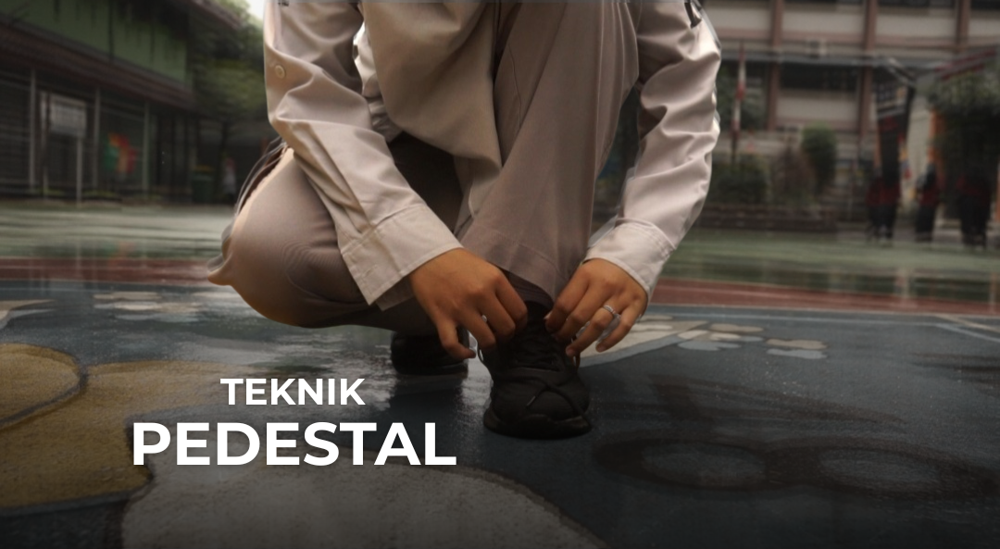
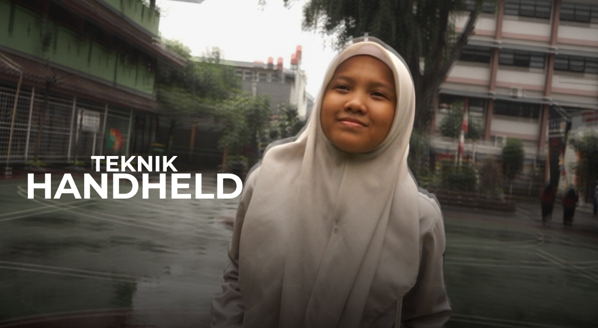

Website ini dibuat sebagai media pembelajaran interaktif tentang movement video.
Di dalamnya, kamu bisa menemukan penjelasan konsep dasar, contoh penerapan, serta materi yang disajikan dengan cara sederhana agar lebih mudah dipahami.
Perlu kamu tahu, website ini merupakan hasil codingan pertama, jadi mohon maaf apabila masih banyak kekurangan.
Semoga meskipun sederhana, website ini bisa bermanfaat untuk mendukung proses belajar kamu.
Oh no!
Maaf kamu belum bisa mengakses soal ini.
Yuk belajar dulu baru berlatih:D

Teknik Tilting
Gerakan kamera secara vertikal (ke atas atau ke bawah) dengan kamera tetap di posisi yang sama

Teknik Crabbing
Gerakan kamera secara lateral atau menyamping, berjalan sejajar dengan subyek yang sedang berjalan

Teknik Panning
panning berarti memutar kamera diam atau video secara horizontal dari posisi tetap
Teknik Follow Shot
Pergerakan kamera yang mengikuti subjek (objek) yang bergerak

Teknik Orbit Shot
Gerakan kamera atau drone yang mengitari objek utama secara melingkar

Teknik Pedestal Shot
Gerakan kamera yang bergerak naik (pedestal up) atau turun (pedestal down) secara vertikal tanpa memiringkan lensa

Handheld Shot
Pengambilan video tanpa alat bantu, menciptakan kesan ketidakstabilan
Teknik Dutch Tilt
Memiringkan kamera secara sengaja, menghasilkan komposisi yang tidak rata
Rack Focus
Fokus lensa kamera dipindahkan secara halus dari satu objek ke objek lain dalam satu frame
Teknik Tilting
Gerakan kamera secara vertikal (ke atas atau ke bawah) dengan kamera tetap di posisi yang sama
Teknik Crabbing
Gerakan kamera secara lateral atau menyamping, berjalan sejajar dengan subyek yang sedang berjalan
Teknik Panning
panning berarti memutar kamera diam atau video secara horizontal dari posisi tetap
Teknik Follow Shot
Pergerakan kamera yang mengikuti subjek (objek) yang bergerak
Teknik Orbit Shot
Gerakan kamera atau drone yang mengitari objek utama secara melingkar
Teknik Pedestal Shot
Gerakan kamera yang bergerak naik (pedestal up) atau turun (pedestal down) secara vertikal tanpa memiringkan lensa
Handheld Shot
Pengambilan video tanpa alat bantu, menciptakan kesan ketidakstabilan
Teknik Dutch Tilt
Memiringkan kamera secara sengaja, menghasilkan komposisi yang tidak rata
Rack Focus
Fokus lensa kamera dipindahkan secara halus dari satu objek ke objek lain dalam satu frame
Evaluasi
Soal Penalaran
1. Jika seorang videografer hanya menggunakan autofocus saat mencoba membuat efek Rack Focus, apa risiko yang paling besar dari teknik ini?
2. Dalam sebuah film dokumenter sosial berjudul "Di Balik Gang Kecil",
kamera merekam suasana pasar tradisional di sore hari. Kamera digerakkan perlahan dari kiri ke kanan, memperlihatkan kehidupan masyarakat mulai dari pedagang sayur, anak-anak bermain, hingga pengamen jalanan.
Sutradara menyatakan ingin membuat penonton merasa "ikut berjalan di dalam pasar tanpa harus berpindah-pindah lokasi"
Mengapa teknik panning menjadi pilihan yang paling tepat dalam konteks narasi dan visual tersebut?
3. Kamu sedang menyutradarai sebuah film drama keluarga. Ada adegan di mana tokoh ibu menunggu anaknya yang sudah lama pergi.
Saat akhirnya anak itu muncul di ujung jalan, kamu ingin menangkap perjalanan emosional sang ibu dari kejauhan hingga anak mendekat, tanpa memotong shot.
Kamu ingin penonton ikut merasakan perubahan ekspresi si ibu secara perlahan. Sebagai sutradara, teknik movement kamera apa yang paling sesuai kamu gunakan untuk mendukung nuansa tersebut?
4. Dalam film pendek psikologis, tokoh utama duduk sendirian di lapangan sekolah yang luas.
Kamu ingin menunjukkan betapa kecil dan terisolasinya dia di tengah ruang yang besar, seolah dunia mengabaikannya. Sudut pengambilan gambar yang paling tepat untuk menyampaikan pesan visual ini adalah...
5. Seorang siswa menggunakan Dutch Tilt dalam adegan film pendeknya saat tokohnya merasa dunia seperti berputar karena panik. Ia tidak punya alat mahal, hanya handphone dan tripod miring.
Apa yang bisa kita simpulkan dari teknik yang digunakan siswa tersebut?
6. Dalam iklan minuman energi, kamera merekam seorang atlet parkour yang sedang berlari dan melompat dari satu gedung ke gedung lain. Kamera bergerak mengikuti dari belakang, memperlihatkan kecepatan dan intensitas aksi secara nyata dan berkelanjutan.
Mengapa teknik follow shot menjadi paling efektif digunakan dalam adegan tersebut?
7. Dalam video dokumenter sejarah, kamera secara perlahan naik dari lantai hingga ke wajah sebuah patung pahlawan nasional. Gerakan vertikal ini dimaksudkan untuk memberi kesan penghormatan dan keagungan.
Apa alasan teknik pedestal lebih sesuai dibandingkan tilting untuk pengambilan gambar ini?
8. Seorang videografer sedang merekam adegan pembukaan untuk video profil seorang arsitek muda di tengah kota.
Ia ingin menampilkan kesan profesional, dramatis, dan penuh makna visual dengan menyorot arsitek tersebut yang berdiri diam di depan gedung tinggi yang ia rancang.
Videografer berdiri cukup dekat, menggunakan kamera handheld agar lebih fleksibel, dan ingin memulai dari bagian kaki arsitek lalu perlahan naik ke wajah, hingga gedung terlihat megah di latar belakang, tanpa berpindah posisi dan tanpa merubah arah pandang kamera.
Dalam kondisi cahaya pagi dan durasi singkat hanya 4 detik, teknik kamera apa yang paling tepat digunakan agar tujuan visual tersebut tercapai tanpa mengorbankan kestabilan gambar?
9. Seorang videografer sedang merekam adegan karakter utama yang perlahan berdiri dari duduk setelah mengalami momen emosional berat. Untuk memprkuat kesan bahwa karakter tersebut sedang
bangkit", ia ingin menggunakan teknik yang bisa menyorot perubahan level secara vertikal tanpa mengubah sudut pandang kamera. Teknik apa yang paling tepat digunakan?
10. Seorang videografer merekam dua desainer fashion yang sedang berjalan berdampingan di trotoar bergrafiti warna-warni.
Ia ingin menjaga posisi mereka tetap di tengah frame sambil menunjukkan dinamika latar belakang secara menyeluruh.
Teknik apa yang paling tepat digunakan?